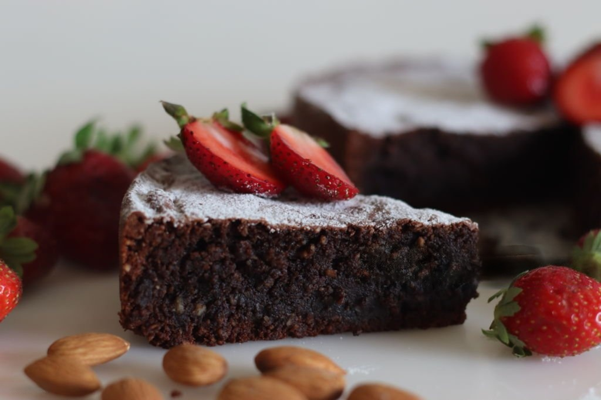

Torta Caprese Recipe

Description
Torta Caprese is a classic Italian chocolate and almond cake
originating from the island of Capri. It's rich, dense, and
naturally gluten-free, made with ground almonds and dark chocolate.
This indulgent dessert is loved for its fudgy texture and intense
flavors.
Ingredients
- 1 cup unsalted butter
- 6 ounces bittersweet chocolate
- 4 large eggs
- Cheese
- 1 14-ounce can, plus 1/4 cup, sweetened condensed milk
- 1 1/2 cup almond flour
- 1/2 teaspoon baking soda
- 1/2 teaspoon baking powder
- Pinch of kosher or coarse sea salt
- 1/4 cup boiling water
- Confectioners' sugar for dusting
Steps
-
Preheat oven to 350 degrees Fahrenheit with the rack set in the
middle. Butter a round 9-inch springform pan and cover bottom
with parchment paper.
-
In a double boiler, melt the butter and bittersweet chocolate,
stirring occasionally to blend. Keep an eye on it and turn off
the heat as soon as it's all melted.
-
In the jar of a blender, place the eggs and sweetened condensed
milk. Puree until smooth. Incorporate the melted chocolate and
puree again. Then add the almond flour, baking soda, baki
powder, salt, and puree again. Lastly add the boiling water and
puree again.
-
Pour the batter into the prepared cake pan and bake for 40
minutes, until top is fluffy and springy to the touch, and a
toothpick comes out moist but not wet.
Home